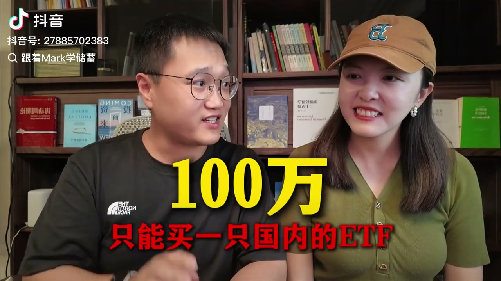
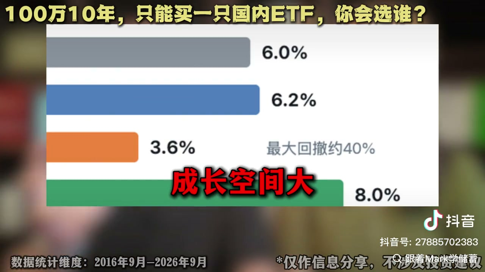
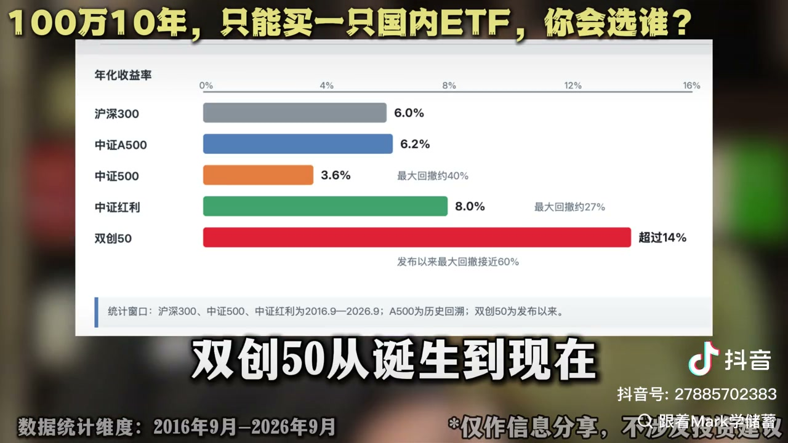

沪深300、中证A500、中证500、中证红利、双创50：五个候选的逻辑，与过去十年年化和最大回撤
来源：跟着Mark学储蓄 · 原视频｜视频时长 04:31｜完整图文阅读稿
一条设定极端的假设题：100 万、10 年、只能买一只国内 ETF，不止损不择时一直拿着，你选谁？两位讲者先给出三个筛选条件，再逐一介绍五个候选指数，最后用过去十年的回测数据说明——真正值得讨论的不是"选谁"，而是"怎么配"。文中所有收益与回撤数字均取自视频给出的回测口径，仅作信息分享，不构成投资建议（原视频画面亦标注此声明）。
规则：三个基本条件
原视频 00:00
题目把条件先锁死：100 万、10 年、只能买一只国内 ETF、长期持有，不止损、不择时、不折腾，一直拿着。讲者也把问题抛给观众：你会选谁？
但肯定不能随便选，必须满足三个基本条件：
- 长期持有，得能活得够久——不能是小众指数；
- 逻辑要能够长期成立——不能只靠一时风口，不是短期炒作；
- 流动性足够好、规模要有保障。
按这三个标准，讲者筛选出五个选手。

五位选手
第一位：沪深300ETF——中国经济的晴雨表
原视频 00:40
背后是沪深两市市值最高的 300 家公司，也就是前 300 名。像茅台、宁德时代、招商银行等等，基本都在这里。可以说里面基本都是中国经济最核心的一批企业，所以被叫做"中国经济的晴雨表"，大盘涨跌要先看它们的脸色。
买它的逻辑：赌的不是某个行业，而是整个中国经济长期向上。
第二位：中证A500ETF——中国版标普500
原视频 01:00
它也被称为中国版的标普 500，主要是因为它太均衡了：背后覆盖 91 个三级行业，从每条赛道挑选出来最能打的代表。
讲者用吃饭打比方：如果把 A500 比作一家饭店，沪深 300 就是店里面最贵的一批菜，而中证 A500 是八大菜系每样都给你来一份——白酒、光伏、半导体、银行里面都有。
买它赌的就是中国经济的全貌。
第三位：中证500——成长股的代表
原视频 01:30
名字跟第二位选手很像，但别搞混了：它背后是排在沪深 300 之后的 500 家中型上市公司。
比喻是：沪深 300 是一支主力阵容的球队，那中证 500 就是它后面的预备队。这些公司还没有大到进入沪深 300，但其中很多是未来可能成长为龙头的小巨人。所以中证 500 可以说是中国成长股的代表，也是中国经济活力的重要体现。
不过讲者提醒：成长空间大也不代表涨得就一定好。这些公司的盈利稳定性、抗风险能力，客观来讲通常是不如大公司的。
第四位：中证红利——现金奶牛
原视频 02:00
它的选股方式很直接：不看你故事讲得好不好，先看你愿不愿意拿出真金白银给股东分红。中证红利是从 A 股里面选出现金分红比较高、分红相对稳定的一批公司，一般都是银行、能源、交通运输这些赚钱能力比较稳定的行业，不太依赖经济的大起大落。给它打个标签，就是"现金奶牛"。
买它的逻辑，不是赌这些公司未来忽然翻几倍，而是希望它们每年能赚钱、能分红、价格别买得太贵，更像是一个防守型的配置。
第五位：双创50——硬科技突击队
原视频 02:20
讲者给它起的外号是"硬科技突击队"，因为它是科创板加创业板里最核心的 50 家科技公司，比如半导体、新能源、医药、高端制造等等。
押它，押的是中国未来的科技升级，以及这些新兴产业里能不能跑出下一批大公司。它进攻性很强，但缺点也非常明显：进攻性强的另一面就是波动特别大，单年出现超 20% 的下跌很常见，体验就像坐过山车。
十年回测：年化与最大回撤
原视频 02:40
如果过去十年分别买了这五位选手，结果会怎么样？讲者把年化大概算了一遍：
| 选手 | 年化收益率 | 最大回撤 |
|---|---|---|
| 沪深300 | 约 6.0% | — |
| 中证A500 | 约 6.2%（发布较晚，按指数公司历史回溯数据计算） | — |
| 中证500 | 约 3.6% | 最大回撤约 40% |
| 中证红利 | 约 8.0% | 最大回撤约 27% |
| 双创50 | 超过 14%（发布以来） | 发布以来最大回撤接近 60% |


讲者对这组数据的点评：
- 沪深300 年化大概 6%；中证 A500 过去十年年化大概 6.2%，和沪深 300 差不多；
- 中证 500 年化大约 3.6%，但最大回撤接近 40%——成长空间大，不代表收益会更高；过去十年中小盘公司的成长，并没有完全变成投资者能够拿到手的收益；
- 中证红利年化大概 8%，最大回撤在 27% 左右，在五位选手里面，它过去十年的收益和抗跌表现都很突出；但这并不代表未来十年红利还能继续走出这一轮的行情；
- 双创 50 从诞生到现在年化超过 14%，但它的最大回撤也接近 60%——收益最高，回撤也是最狠的。
结论：不是"选谁"，而是"怎么配"
原视频 03:40
回到最开始的问题：长期持有一只国内 ETF，选谁？讲者说，这个假设本身就有些极端——现实里面没有人规定我们只能买一只。
所以真正成熟的投资问题，其实不是"选谁"，而是"怎么配"。不同的 ETF 代表的是不同资产的风险，把它们放回组合里，各自的角色是：
- 沪深300 和中证A500：代表中国经济大盘——底仓；
- 中证500：用来增加成长的弹性；
- 中证红利：作为防守；
- 双创50：代表中国科技升级和新兴产业——作为进攻。
讲者说，很多成熟投资者的思路不是押一个，而是组合。这样做的好处是：投资本身没有标准答案，很多时候投资成功也不是因为选中了所谓最好的资产，而是避免把所有筹码压在一件事上。
最后把问题留给观众：如果你现在做一个国内的 ETF 组合，你会怎么配？
读完后回顾
- 筛选标准三条：能长期活得够久（非小众指数）、逻辑能长期成立（非短期风口）、流动性好且规模有保障。
- 五个候选各自的逻辑：沪深300=最核心的 300 家公司，赌中国经济整体向上；中证A500=覆盖 91 个三级行业，赌经济全貌；中证500=沪深300 之后的 500 家中型公司，成长股的预备队；中证红利=现金分红稳定的公司（银行、能源、交通运输），防守型配置；双创50=科创+创业里最核心的 50 家科技公司，进攻性最强、波动也最大。
- 十年回测（2016.9—2026.9；A500 为历史回溯、双创50 为发布以来）：沪深300 约 6.0%、中证A500 约 6.2%、中证500 约 3.6%（回撤约 40%）、中证红利约 8.0%（回撤约 27%）、双创50 超 14%（回撤接近 60%）。
- 关键提醒：成长空间大不等于收益更高——中证500 的回撤近 40%、年化却只有 3.6%；红利过去十年表现突出，但不代表未来还能延续。
- 落脚点：不是选谁，而是怎么配——底仓（沪深300／中证A500）、弹性（中证500）、防守（中证红利）、进攻（双创50）。
来源与核验说明
- 本稿依据视频原声 ASR 与视频硬字幕、回测图表整理；所有年化与回撤数字均沿用原视频口径，未做外部事实核查，也不构成投资建议（原视频画面标注"仅作信息分享，不涉及投资建议"）。
- 视频为两位讲者对谈形式，ASR 未提供可靠的说话人分离，本稿按内容顺序整理为叙述体，不逐句归属说话人（详见 `provenance.json`）。
- 标题取自画面常驻题「100万10年，只能买一只国内ETF，你会选谁？」；作者取自画面水印"跟着Mark学储蓄"；视频未说明发布日期，本稿不推断。
- 所有画面均为按精确秒数从原视频提取的真实截图，逐张查看后选用，源时间见 `frame-map.json`；本视频以人物口播为主，仅回测图表具备信息价值，故配图从简。
- 明确的 ASR 误识别已按硬字幕与画面校订，清单见 `provenance.json`。